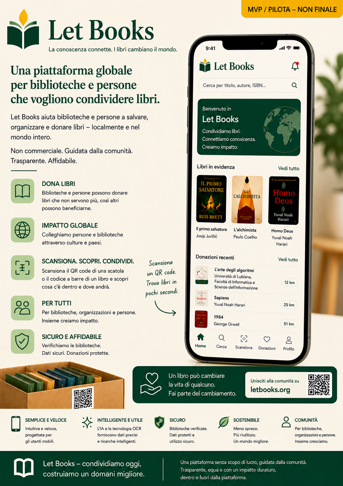

Nota sulla fase alpha iniziale
Documentazione, mockup e flussi descritti sono ancora in una fase alpha iniziale. Il contenuto è assistito da AI e può includere imprecisioni, dettagli provvisori o concetti direzionali.
Let Books aiuta persone, biblioteche e future organizzazioni ospitanti a catalogare libri di valore, rivedere le donazioni e ritrovare in seguito le copie richieste.

Documentazione, mockup e flussi descritti sono ancora in una fase alpha iniziale. Il contenuto è assistito da AI e può includere imprecisioni, dettagli provvisori o concetti direzionali.
Uno stesso titolo può avere più copie fisiche, ciascuna con stato, posizione ed esito di donazione propri.
Scansiona una scatola, vedi il contenuto, aggiungi libri rapidamente e prepara i ritiri senza incertezze.
Esporta una lista, raccogli decisioni come desiderato o forse e genera poi una lista di ritiro per posizione.
Scegli alcuni punti di ingresso concreti tra blog, materiale didattico e pagine wiki.
Questa guida spiega come rivedere un'implementazione assistita dall'IA verificandola rispetto alla specifica di prodotto, alle regole del flusso di lavoro, alla documentazione e alle aspettative di validazione, invece di giudicare solo se l'output appare curato o tecnicamente plausibile.
WikiMarkdown è un formato pratico per archiviare l'intento del prodotto, la documentazione, le guide e le prove in un formato rivedibile, portabile, diffabile e facile da collegare ai flussi di lavoro di convalida.
TemiChe cos'è la translation memory, in che cosa eccelle e perché resta utile anche nei workflow di traduzione assistita dall'IA.